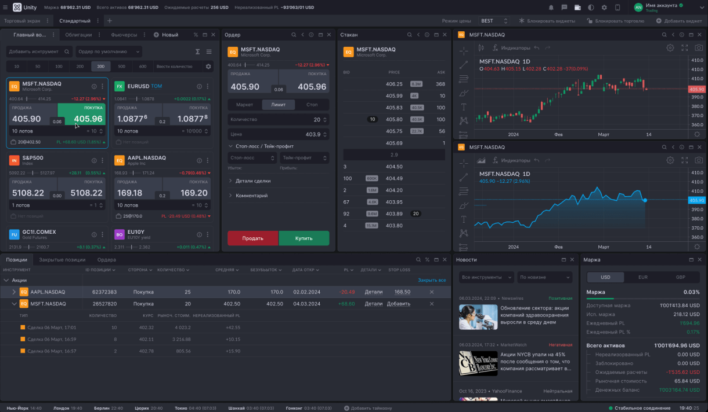
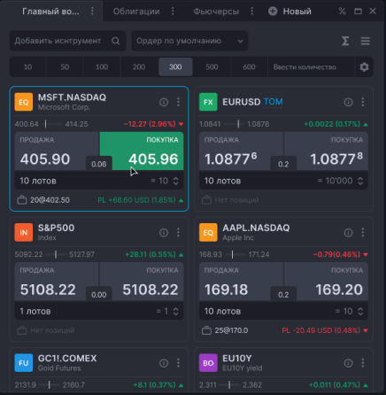
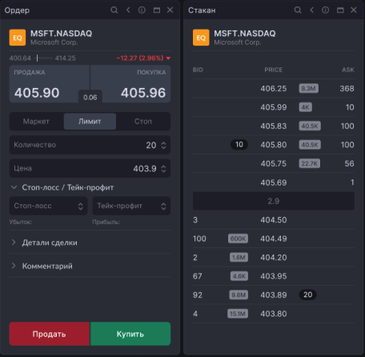
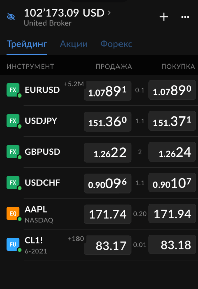
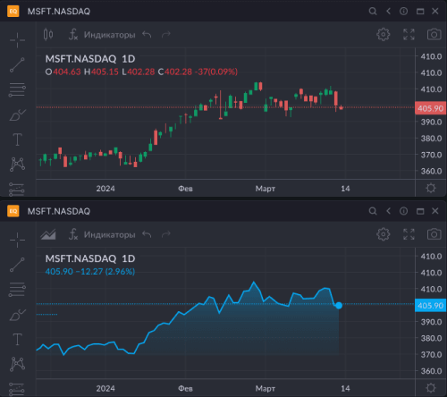
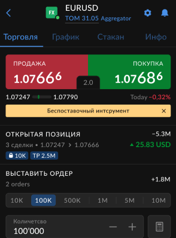
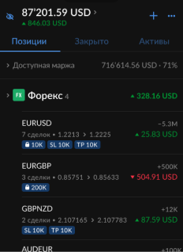

Unity Trade Solutions: торговый терминал, который брокер выпускает под своим брендом
Unity — мультиассетная торговая платформа для брокеров, банков и фондов. Я участвовал в дизайне двух клиентских продуктов: веб-терминала для торговли из браузера и мобильного приложения Unity Trader для профессиональных трейдеров.

Продукт с двумя заказчиками: брокер и его трейдер
Unity не торгует с людьми напрямую. Платформу покупают брокеры, банки, инвестфонды и проп-трейдинговые компании и выпускают её клиентам под своим брендом — в том числе в сторах со своей учётной записи.
Поэтому каждый экран решает две задачи: трейдеру нужна скорость и плотность информации, бизнесу — интерфейс, который можно перекрасить, перевести и настроить под свой набор инструментов.
Два продукта одной платформы
Рабочее место из виджетов
Трейдеры работают по-разному: одному нужен стакан и тикет, другому — пять графиков. Поэтому терминал собирается из виджетов — вотчлисты, тикет, стакан, графики TradingView, новости, маржа — и сохраняется в виде вкладок-раскладок. Виджеты можно закрепить, а торговлю — заблокировать от случайного клика.

Тикет и стакан рядом
Решение о сделке принимается за секунды. Цены продажи и покупки со спредом между ними стоят крупно сверху, тип ордера — один переключатель «Маркет / Лимит / Стоп», стоп-лосс и тейк-профит раскрываются по запросу. Справа — стакан того же инструмента: видно, по какой цене есть объём.

Терминал в кармане без упрощений
Unity Trader — не облегчённая витрина, а рабочий инструмент: все типы ордеров, контроль позиций и сделок. Котировки в списке читаются с одного взгляда — крупные «большие цифры» цены и спред между ними, — а на экране инструмента открытая позиция видна прямо над формой нового ордера.

Экраны
Веб-терминал и Unity Trader в тёмной теме.



Один интерфейс на десятки рынков и брендов
Чем сложнее данные, тем строже должна быть система: одна карточка котировки и один тикет работают для акции, валютной пары и фьючерса — у любого брокера и на любом языке.
финансовых инструментов
источников цен
юрисдикций
Источник: unity.finance. Мой вклад в результат: цифры по терминалу и приложению.